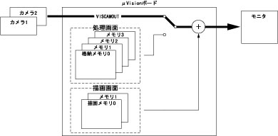

VISCAMOUT
（ステートメント）

カメラからの映像をモニタに表示します。

VISCAMOUT <カメラ番号>［，<テーブル番号>］

<カメラ番号>
カメラ番号を指定します。（1または2）
<テーブル番号>
表示する際のルックアップテーブル番号を指定します。（0～15）省略時は1を指定します。


本命令はロボットコントローラではμVisionボード（オプション）が必要です。


|
VISCAMOUT 1,1
|
'カメラ1番からの映像(動画像)をモニタにテーブル
'1番(0～175約70%輝度圧縮)で変換し表示します。
|
|
VISCAMOUT 1
|
'VISCAMOUT 1,1と同じ結果が得られます。
|